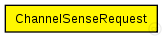

This documentation is released under the Creative Commons license
This documentation is released under the Creative Commons licenseThe ChannelSenseRequest is a control packet from the MAC layer to the physical layer. It tells the physical layer to sense for a specific time whether the channel is currently busy. If the result is determined the physical layer stores the result inside the request and sends it back to the MAC layer.
The following diagram shows usage relationships between types. Unresolved types are missing from the diagram. Click here to see the full picture.
The following diagram shows inheritance relationships for this type. Unresolved types are missing from the diagram. Click here to see the full picture.
| Name | Type | Description |
|---|---|---|
| result | ChannelState |
The result of the request containing the current state of the channel. See ChannelState for details. |
| senseMode | int |
defines the sensing mode (see SenseMode enum) |
| senseTimeout | simtime_t |
Time to listen on the channel to determine if its busy or not. |
// // The ChannelSenseRequest is a control packet from the // MAC layer to the physical layer. // It tells the physical layer to sense for a specific time whether // the channel is currently busy. If the result is determined // the physical layer stores the result inside the request and // sends it back to the MAC layer. // packet ChannelSenseRequest { int senseMode enum(SenseMode); // defines the sensing mode (see SenseMode enum) simtime_t senseTimeout; // Time to listen on the channel to determine if its busy or not. ChannelState result; // The result of the request containing the current state of the channel. // See ChannelState for details. }
This documentation is released under the Creative Commons license